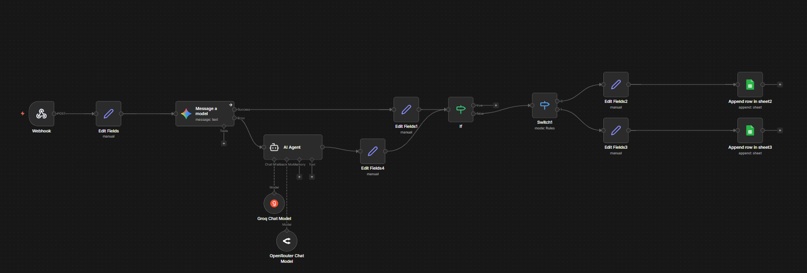
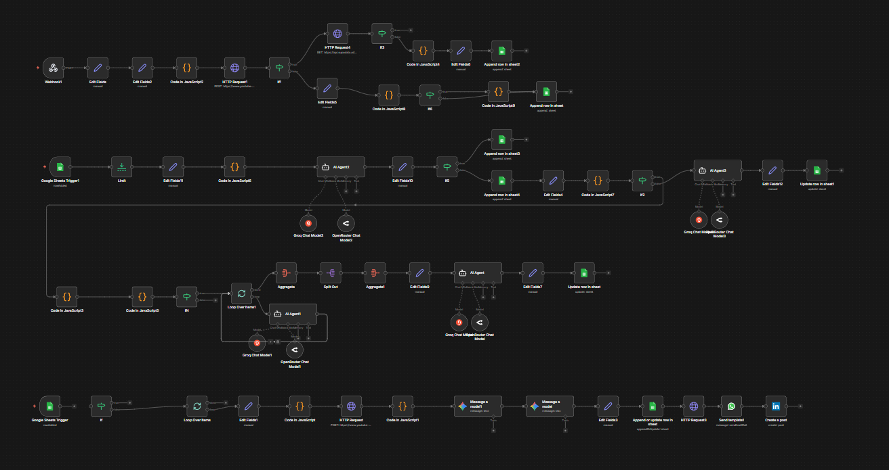

Production-ready n8n workflows that save hours, eliminate errors, and scale with your needs. Real solutions to real problems.
Production-ready automations solving real problems
Auto-capture bank transactions from SMS and log to Google Sheets with AI parsing. Zero manual input.
Transform YouTube videos into engaging LinkedIn posts. AI relevance filtering + WhatsApp approval flow.
Detailed breakdown of each automation
Manual expense tracking is tedious and error-prone. Most people don't log transactions consistently, leading to incomplete financial records and hours wasted on monthly reconciliation.

Creating consistent LinkedIn content is time-consuming. Watching videos, extracting insights, formatting posts, and publishing takes 45+ minutes per post — leading to inconsistent posting and missed opportunities.
